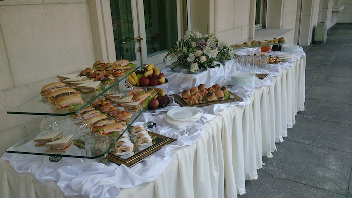
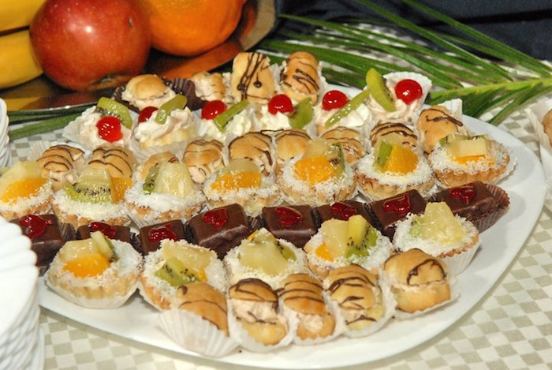

Кетъринг Плевен предоставя професионални кетъринг услуги, производство и доставка на храни и цялостно организиране на събития и мероприятия с кетъринг в Плевен.
При нас ще получите първокласни кетъринг услуги, благодарение на собствената ни сертифицирана производствена база, където сами произвеждаме продуктите си с много любов и внимание към детайла. По този начин Ви гарантираме безкомпромисно качество, перфектен вкус и кетъринг хапки на най-разумни цени!
При приготвянето на нашите неустоими кетъринг плата с изделия с ненадминат вкус, използваме винаги пресни и свежи продукти с гарантиран произход и високо качество от производител. Най-голямото ни желание е да оправдаем доверието Ви и да Ви предоставим най-добрите кетъринг услуги на пазара, защото за нас… Вашето събитие е специално!

ВИДОВЕ КЕТЪРИНГ
Всяко празнично мероприятие или бизнес събитие като семинар или конференция изисква добре селектирано, съобразено с тематиката му и вкуса на гостите, кетъринг меню, включващо разнообразни ястия. Кетъринг Плевен предлага всички видове кетъринг, така че да покрие изискванията и очакванията и на най-изтънчения и деликатен вкус.
|  | Кетъринг блюдата и плата могат да се състоят от:
|
|---|